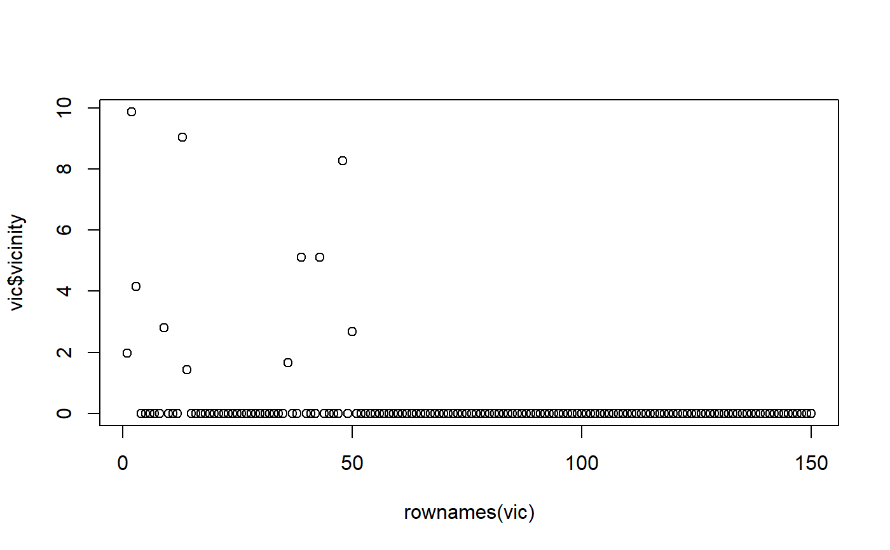

vicinitiesForSample.RdGiven some data and one sample \(s_i\) from it, constructs the
neighborhood \(N_i\) of that sample and assigns centralities to all other
samples in that neighborhood to it. Samples that lie outside the neighborhood
are assigned a vicinity of zero. Uses mmb::neighborhood() and
mmb::centralities().
vicinitiesForSample( df, sampleFromDf, selectedFeatureNames = c(), shiftAmount = 0.1, doEcdf = FALSE, ecdfMinusOne = FALSE, retainMinValues = 0 )
| df | data.frame that holds the data (and also the sample to use to define the neighborhood). Each sample in this data.frame is assigned a vicinity. |
|---|---|
| sampleFromDf | data.frame a single row from the given data.frame. This is used to select a neighborhood from the given data. |
| selectedFeatureNames | vector of names of features to use to compute the
vicinity/centrality. This is passed to |
| shiftAmount | numeric DEFAULT 0.1 optional amount to shift each features probability by. This is useful for when the centrality not necessarily must be an actual probability and too many features are selected. To obtain actual probabilities, this needs to be 0, and you must use the ECDF. |
| doEcdf | boolean DEFAULT FALSE whether to use the ECDF instead of the EPDF to find the likelihood of continuous values. |
| ecdfMinusOne | boolean DEFAULT FALSE only has an effect if the ECDF is used. If true, uses 1 minus the ECDF to find the probability of a continuous value. Depending on the interpretation of what you try to do, this may be of use. |
| retainMinValues | DEFAULT 0 the amount of samples to retain during segmentation. For separating a neighborhood, this value typically should be 0, so that no samples are included that are not within it. However, for very sparse data or a great amount of variables, it might still make sense to retain samples. |
data.frame with a single column 'vicinity' and the same rownames as the given data.frame. Each row then holds the vicinity for the corresponding row.
#> Warning: No explicit feature selection, using all.#> Warning: No explicit feature selection, using all.#> Warning: Density estimation failed: Error in bw.SJ(x, method = "ste"): sample is too sparse to find TDvic$vicinity#> [1] 1.980087 9.878297 4.164078 0.000000 0.000000 0.000000 0.000000 0.000000 #> [9] 2.811244 0.000000 0.000000 0.000000 9.035200 1.437008 0.000000 0.000000 #> [17] 0.000000 0.000000 0.000000 0.000000 0.000000 0.000000 0.000000 0.000000 #> [25] 0.000000 0.000000 0.000000 0.000000 0.000000 0.000000 0.000000 0.000000 #> [33] 0.000000 0.000000 0.000000 1.655913 0.000000 0.000000 5.114771 0.000000 #> [41] 0.000000 0.000000 5.114567 0.000000 0.000000 0.000000 0.000000 8.274239 #> [49] 0.000000 2.667860 0.000000 0.000000 0.000000 0.000000 0.000000 0.000000 #> [57] 0.000000 0.000000 0.000000 0.000000 0.000000 0.000000 0.000000 0.000000 #> [65] 0.000000 0.000000 0.000000 0.000000 0.000000 0.000000 0.000000 0.000000 #> [73] 0.000000 0.000000 0.000000 0.000000 0.000000 0.000000 0.000000 0.000000 #> [81] 0.000000 0.000000 0.000000 0.000000 0.000000 0.000000 0.000000 0.000000 #> [89] 0.000000 0.000000 0.000000 0.000000 0.000000 0.000000 0.000000 0.000000 #> [97] 0.000000 0.000000 0.000000 0.000000 0.000000 0.000000 0.000000 0.000000 #> [105] 0.000000 0.000000 0.000000 0.000000 0.000000 0.000000 0.000000 0.000000 #> [113] 0.000000 0.000000 0.000000 0.000000 0.000000 0.000000 0.000000 0.000000 #> [121] 0.000000 0.000000 0.000000 0.000000 0.000000 0.000000 0.000000 0.000000 #> [129] 0.000000 0.000000 0.000000 0.000000 0.000000 0.000000 0.000000 0.000000 #> [137] 0.000000 0.000000 0.000000 0.000000 0.000000 0.000000 0.000000 0.000000 #> [145] 0.000000 0.000000 0.000000 0.000000 0.000000 0.000000# Plot the ordered samples to get an idea which ones have a vicinity > 0 plot(x=rownames(vic), y=vic$vicinity)